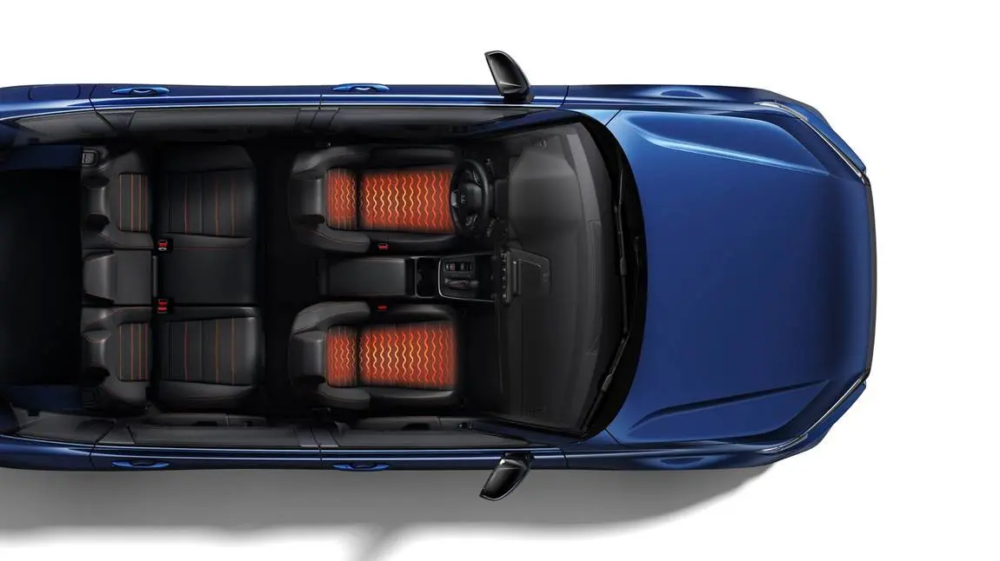
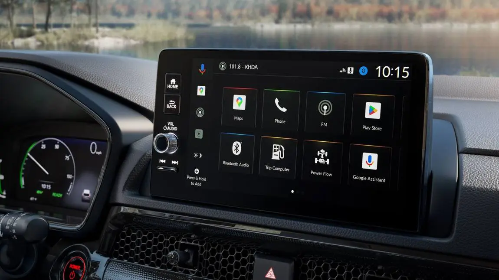

קאפיטל 23
סאפטוועיר, אפדעיטס און פארבינדונג
זייטן 356–363 אינעם PDF
דער טאטש-סקרין ווי דער צענטער פון די קאר'ס סאפטוועיר
דער CR-V EX האט אסאך קאמפיוטערס, אבער דער וואס איר טאפט אן יעדן טאג איז דער 9-אינטש קאליר טאטש-סקרין. Honda'ס feature guide (די אנווייזונג פון די פונקציעס) רופט אים דער טויער צו אייערע אודיא מקורות, Apple CarPlay, Android Auto און HondaLink. קאפיטל 7 באהאנדלט די טעגליכע באנוץ פונעם טאטש-סקרין, און קאפיטל 8 באהאנדלט ווי מען פארבינדט אייער Pixel 9a. דער קאפיטל באהאנדלט די זייט פון אפהיטן און פאררעכטן: סעטינגס, ריסטארטן, ריסעטן, פאררעכטן פארבינדונגען, HondaLink, ווי אפדעיטס קומען אן צום קאר, און וואס דער מאנואל זאגט וועגן דאטא און פריוואטקייט.

דער סטארט ווי א שנעלער טשעק
דער טאטש-סקרין הייבט זיך אן אויטאמאטיש ווען איר שטעלט דעם Power מאדָע אויף ACCESSORY אדער ON. ביים אנהייבן ווייזט ער א disclaimer סקרין (א ווארענונג-מעלדונג), און איר קלייבט OK. אויב איר קלייבט נישט OK אין 5 סעקונדעס, קומט סיי ווי דער היים-סקרין, אזוי אז איר דארפט עס קיינמאל נישט אנטאפן. די סדר דינט אויך ווי א שנעלער טשעק. אויב איר זעט די disclaimer און דערנאך דעם היים-סקרין, האט זיך דער סיסטעם אנגעהויבן ווי געהעריג.
צוויי סארטן אפדעיטס
עס זענען דא צוויי סארטן אפדעיטס, און עס איז גוט זיי צו האלטן באזונדער. דער ערשטער סארט איז דער אינפאטעינמענט סאפטוועיר, וואס פירט דעם סקרין, די אודיא און די טעלעפאן פונקציעס. דער סאפטוועיר לייסענס אינעם מאנואל זאגט אז דער סאפטוועיר קען ווערן אפגעדעיט ווען דער קאר ווערט געסערוויסט ביים דילער, אדער פון ווייטנס over the air (דורך דער לופט, אן קאבל) דורך Honda, מיט אדער אן ווייטערדיגע מעלדונג אדער אייער הסכמה. Honda קען עס אפדעיטן לויט איר באשלוס, למשל צו פארבעסערן די פונקציאנירונג, זיכערהייט אדער סטאביליטעט. דער צווייטער סארט דעקט אלעס וואס איז מעכאניש אדער שייך צו זיכערהייט, ווי דער מאטאר, ברעמזן, עירבעגס און Honda Sensing. דער מאנואל גיט נישט די אייגנטימער קיין שום וועג צו אפדעיטן די זאכן. די ארבעט, אריינגערעכנט recall (ריקאל, א רוף פון דער פירמע צו פאררעכטן א פראבלעם) פאררעכטונגען, געהערט ביי אייער Honda דילער.
ווער אפדעיט וואס
| געביט | ווי עס ווערט אפגעדעיט | וואס דער אייגנטימער טוט |
|---|---|---|
| סקרין, אודיא, טעלעפאן סאפטוועיר | דילער סערוויס אדער Honda over-the-air | גארנישט, סיידן Honda הייסט |
| מאטאר, ברעמזן, עירבעגס, Honda Sensing | נאר ביים דילער | פרעגן ביי יעדן סערוויס באזוך |
| Recalls | נאר ביים דילער | פרעגן ביי יעדן סערוויס באזוך |
| אייער אייגענער אדער פרעמדער firmware | נישט ערלויבט | מאכט בטל די שייכותדיגע גאראנטיעס |
General Settings: דא הייבט זיך אן די סאפטוועיר אפהיטונג
טוישט סעטינגס נאר ווען דער קאר שטייט אינגאנצן און איז אריינגעשיפט אין P. ווען דער Power מאדָע איז אויף ON, דריקט דעם קנעפל וואס ווערט געוויזן ביים אנהייב פונעם וועג אויפן בילד אינעם מאנואל, דערנאך קלייבט General Settings (אלגעמיינע איינשטעלונגען). דער מאנואל רעכנט אויס די גרופעס: System, Connections, Display, Sound, Sound Volume און Rear Camera. פאר סאפטוועיר אפהיטונג זענען System און Connections די וויכטיגסטע.
System פונקטן
System פונקטן וואס דער מאנואל באשרייבט
| פונקט | ברירות | פאבריק איינשטעלונג |
|---|---|---|
| Time Format | 12H / 24H | 12H |
| Automatic Date & Time | GPS(On / Off שטעלט דעם זייגער) | On |
| Auto Daylight Saving Time | On / Off | On |
| Time Zone | קלייבן מיט דער האנט | (נישט אנגעגעבן) |
| Date Format | MM/DD/YYYY / YYYY/MM/DD | MM/DD/YYYY |
| Language | aisçol / FranñEnglish / Espa | English |
| Factory Data Reset | Cancel / Continue | (נישט שייך) |
| Touch Panel Sensitivity | Low / High | Low |
| Legal Information | ווייזט לייסענס מעלדונגען | (נישט שייך) |
איר ווילט אפשר וויסן וועלכע סאפטוועיר ווערסיע אייער קאר האט. דער אייגנטימער מאנואל באשרייבט נישט קיין סאפטוועיר ווערסיע סקרין אדער אן אפדעיט מעניו. אויב אייער סקרין ווייזט א פונקט וואס דער מאנואל רעכנט נישט אויס, האלט עס פאר נישט באשטעטיגט דורך דעם בוך. כדי צו וויסן אייער פונקטליכע ווערסיע, פרעגט ביים דילער'ס סערוויס אפטיילונג, וואס האט די ריכטיגע געצייג עס צו טשעקן.
צוויי System פונקטן לייזן קליינע טעגליכע צרות. אויב דער סקרין איגנארירט אמאל אייערע טאפן, טוישט Touch Panel Sensitivity (ווי שטארק דער סקרין שפירט א טאפ) פון Low אויף High. אויב דער זייגער איז אמאל אפ מיט א שעה, טשעקט קודם Automatic Date & Time, Auto Daylight Saving Time און Time Zone.
Reboot און פאבריק ריסעט
אויב דער סקרין פרירט אדער א מקור וויל נישט שפילן, פרובירט קודם א reboot (ווידער אנהייבן). א reboot הייבט פשוט ווידער אן דעם אודיא סיסטעם און מעקט גארנישט אויס.
ווידער אנהייבן דעם אודיא סיסטעם
- דריקט און האלט דעם קנעפל וואס ווערט געוויזן אויפן Reboot Audio בלאט אינעם מאנואל א געוויסע צייט.
- קלייבט Reboot.

Factory Data Reset (צוריקשטעלן צו די פאבריק איינשטעלונגען) שטעלט צוריק אלע מעניו און פערזענליכע סעטינגס צו די פאבריק איינשטעלונגען, און עס שטעלט אויך צוריק די אינסטאלירטע עפס צו זייער פאבריק צושטאנד.
Factory Data Reset
- דריקט דעם זעלבן אנהייב קנעפל וואס מען ניצט פאר General Settings.
- קלייבט General Settings.
- קלייבט System.
- קלייבט Factory Data Reset. א באשטעטיגונג מעלדונג קומט ארויף.
- קלייבט Continue.
- קלייבט נאכאמאל Continue. דער סיסטעם הייבט זיך ווידער אן.
די טאפלטע באשטעטיגונג שיצט אייך פון אויסמעקן אלעס מיט איין צופעליגן טאפ. דער מאנואל דערמאנט איין קלארן פאל פאר א ריסעט: ווען איר גיט איבער דעם קאר צו עמיצן אנדערש, שטעלט צוריק אלע סעטינגס צום אנהייב און מעקט אויס אלע פערזענליכע דאטא. דאס איז וויכטיג ווייל HandsFreeLink (דער Honda הענט-פרייער טעלעפאן סיסטעם) האלט ביז 100 רוף היסטאריעס און 16 באליבטע קאנטאקטן, און דער סאפטוועיר לייסענס זאגט אז דער סיסטעם קען אויך האלטן מכשיר נומערן, קאנטאקט אינפארמאציע, זוך היסטאריע און געהאלטענע דעסטינאציעס. מען קען אויך ניצן א ריסעט ווי א לעצטער שריט ווען א פראבלעם בלייבט אפילו נאך א reboot. דערנאך דארפט איר ווידער איינשטעלן אייערע סעטינגס און ווידער פערן אייער טעלעפאן.
Connections און HandsFreeLink
די Connections (פארבינדונגען) גרופע האלט די טעלעפאן פארבינדונגען פונעם סיסטעם. רוב פארבינדונג פראבלעמען לייזט מען דא.
Connections פונקטן
| פונקט | וואס עס טוט |
|---|---|
| Priority Device | שטעלט איין וועלכער טעלעפאן פארבינדט זיך ערשט |
| Name | טוישט דעם קאר'ס Bluetooth נאמען |
| MAC Address | ווייזט דעם סיסטעם'ס הארדוועיר נעטווערק אדרעס |
| Wi-Fi Settings | ווייזט דעם Wi-Fi פאסווארט; קען אים טוישן צופעליג |
| Connect New Device | פערט א נייעם טעלעפאן צו HFL |
| Saved devices | פארבינדן, אפשניידן אדער אויסמעקן יעדן געפערטן טעלעפאן |
HandsFreeLink (HFL) איז Honda'ס Bluetooth טעלעפאן סיסטעם. נאר איין טעלעפאן קען ניצן HFL אויף איינמאל. ווען עטליכע געפערטע טעלעפאנען זענען אינעם קאר, פארבינדט זיך דער סיסטעם אויטאמאטיש מיט דעם טעלעפאן וואס האט פריאריטעט. אויב דער קאר קלייבט אלעמאל א צווייטן טעלעפאן אנשטאט אייערן, עפנט Connections, קלייבט Priority Device (דער טעלעפאן מיט פריאריטעט), און שטעלט איין אייערן. אויב אייער טעלעפאן ווערט נישט דערקענט פאר מוזיק, קען זיין אז א צווייטער HFL טעלעפאן וואס שטיצט נישט Bluetooth Audio איז שוין פארבינדן; קלייבט Change Devices צו וועקסלען.
די כלל וואס צעמישט די מערסטע אייגנטימער
ווען א טעלעפאן איז פארבינדן דורך Apple CarPlay אדער Android Auto, ארבעטן נישט Bluetooth Audio און HandsFreeLink פון יענעם טעלעפאן. רופן און מוזיק גייען דורך דער פראיעקציע אנשטאט, הייסט עס אז Bluetooth איז נישט צעבראכן. אנדערע טעלעפאנען וואס זענען פריער געפערט געווארן קענען נאך אלץ שפילן אודיא דורך Bluetooth בשעת די פראיעקציע לויפט. אויב א USB אודיא מכשיר איז פארבינדן, דארפט איר אפשר אליין קלייבן Audio Source און דערנאך Bluetooth Audio. ווען מען וועקסלט צו אן אנדער מאדָע, שטעלט זיך אפ די מוזיק פונעם טעלעפאן. אויב א טעלעפאן מאכט נאך אלץ פראבלעמען, מעקט אים אויס פון אייערע saved devices און פערט אים נאכאמאל, ווי געוויזן אין קאפיטל 8.
נישט יעדער Bluetooth טעלעפאן מיט סטרימינג אודיא פאסט צום סיסטעם. פאר די אפיציעלע ליסטע קענען אמעריקאנער אייגנטימער ניצן דעם HandsFreeLink קאמפאטיביליטי טשעק אויף mygarage.honda.com אדער רופן 1 -888 -528 -7876; קאנאדישע אייגנטימער רופן 1 -855 -490 -7351. פאר קלארערע רופן, לייגט אייער טעלעפאן וואו ער כאפט א גוטן סיגנאל, דרייט די ווענטס אוועק פונעם סופיט און מאכט צו די פענסטער, ווייל דער רעש שטערט דעם מייקראפאן. אויב דער מייקראפאן כאפט אויף אנדערע קולות, קען א קול באפעל ווערן פאלש פארשטאנען.
פראבלעמען מיט Android Auto און Apple CarPlay
קאפיטל 8 באהאנדלט די שריט פון פארבינדן; דא זענען די פאקטן פאר פאררעכטן פראבלעמען. דער מאנואל רעקאמענדירט צו אפדעיטן Android צו די לעצטע ווערסיע, און רעקאמענדירט אויך די לעצטע אפערירונג סיסטעם פאר Apple CarPlay (iPhone 6S אדער נייער מיט iOS 10.0.2 אדער שפעטער). טעלעפאנען מיט Android 9.0 אדער פריער דארפן די Android Auto עפ פון Google Play. Apple CarPlay און Android Auto קענען נישט לויפן אויף איינמאל. די סקרינס קענען זיין אנדערש לויט די ווערסיע פון דער Android Auto עפ, הייסט עס אז א געטוישטער אויסזען נאך א טעלעפאן אפדעיט איז נארמאל.
ריסעטן א פראיעקציע פארבינדונג
- פארקט אויף א זיכערן פלאץ.
- דריקט דעם אנהייב קנעפל, קלייבט General Settings, דערנאך Connections.
- קלייבט דעם מכשיר און שניידט אים אפ אדער מעקט אים אויס.
- דריקט דעם אנהייב קנעפל, קלייבט Android Auto, דערנאך Connect New Device.
- פערט דעם טעלעפאן צו HFL, קלייבט Yes, און נעמט אן די פארבינדונג אויפן טעלעפאן.
אויב איר האט אמאל געענטפערט No אויף דער פראגע פון פארבינדן, קענט איר טוישן די הסכמה אונטער Connections. ביידע סיסטעמען דארפן אן אקטיווע סעלולער פארבינדונג און א דאטא פלאן, און אייער קעריער'ס פרייזן גילטן. א שוואכער סיגנאל קען מאכן אז מעפס און מוזיק זאלן שטעקן בלייבן אפילו ווען דער קאר איז אין ארדענונג.
דער מאנואל איז ערליך וועגן איין גרעניץ. ענדערונגען אין טעלעפאן אפערירונג סיסטעמען, הארדוועיר, סאפטוועיר אדער אנדערע טעכנאלאגיע, אדער נייע אדער געטוישטע רעגירונג געזעצן, קענען פארקלענערן אדער ענדיגן די Apple CarPlay און Android Auto פונקציעס, און Honda גיט נישט קיין גאראנטיע אויף זייער ארבעט אין דער צוקונפט. למעשה איז די טעלעפאן זייט פונקט אזוי וויכטיג ווי דער קאר, דעריבער האלט דעם טעלעפאן און זיינע עפס אפגעדעיט. כדי צוריקצוקומען פון איינעם פון די סיסטעמען צו די Honda סקרינס, קלייבט דעם Honda אייקאן אויפן פראיעקציע מעניו.

HondaLink און בלייבן אפגעדעיט
Honda'ס ספעציפיקאציעס רעכענען HondaLink ווי סטאנדארט אויפן EX. דער feature guide באשרייבט עס ווי א סעט פון טעלעפאן עפס וואס נעמט אריין באשטעלן סערוויס אפוינטמענטס ביי Honda דילערס, זוכן ערטער, וועטער אינפארמאציע און סערוויס מעלדונגען פון Honda. כדי אקטיוו צו מאכן די פונקציעס, דאונלאודט די HondaLink עפ פון App Store אדער Google Play, דערנאך פערט אייער טעלעפאן צום קאר. דערנאך קענט איר זיי ניצן אינעם קאר אויפן 9-אינטש טאטש-סקרין, אדער אומעטום אנדערש דורך דער עפ מיט א סעלולער סיגנאל.
די מקורות באשרייבן נישט ווי מען זוכט recalls, דעריבער בלייבט דער בוך ביי דעם וואס זיי שטיצן. HondaLink ברענגט אייך סערוויס מעלדונגען פון Honda און לאזט אייך באשטעלן אן אפוינטמענט ביים דילער. דער מאנואל ניצט mygarage.honda.com פאר אייגנטימער געצייג ווי דער טעלעפאן קאמפאטיביליטי טשעק און פריוואטקייט סעטינגס. ביים דילער ווערט געטון סאפטוועיר, מעכאנישע און זיכערהייט ארבעט. ביי יעדן סערוויס באזוך, פרעגט דעם אדווייזער צי עס זענען דא אפדעיטס אדער אפענע recalls פאר אייער קאר (זעט קאפיטל 19).
וואס דער סאפטוועיר לייסענס זאגט
אפדעיטס קענען ווערן אינסטאלירט דורך Honda, דורך א דילער, אדער דורך אייך, אבער נאר ווען Honda הייסט עס . אויב דער סאפטוועיר ווערט פארביטן מיט סאפטוועיר אדער fri mware וואס איז נישט צוגעשטעלט און אינסטאלירט דורך Honda אדער א דילער, ווערן די גאראנטיעס אויפן סאפטוועיר, און אויף קאר פונקציעס וואס הענגען אין אים, בטל. דער לייסענס פארבאט אויך צו טוישן, reverse engineering (אויסשפירן ווי עס איז געבויט(אדער decompiling)צוריק צעלייגן(דעם סאפטוועיר. ער האט אן arbitration)בוררות) פונקט וואס איז מחייב; איר קענט זיך ארויסנעמען פון דעם אין 30 טעג פון ווען איר האט ערשט גענוצט דעם סאפטוועיר, דורך שיקן אן אונטערגעשריבענע געשריבענע מעלדונג צו American Honda Motor Co., Inc., Honda Automobile Customer Service, Mail Stop CHI-5, 1919 Torrance Blvd., Torrance, CA 90501-2746.
דאטא, פריוואטקייט און לעגאלע סקרינס
Event data recorder
דער קאר האט אן event data recorder (EDR, א רעקארדער וואס פארשרייבט אינפארמאציע ביי א צופאל). ער רעקארדירט נאר אין געוויסע קראך אדער כמעט-קראך מצבים, ווי ווען אן עירבעג עפנט זיך אדער מען שלאגט זיך אן אין א שטערונג אויפן וועג, געווענליך פאר 30 סעקונדעס אדער ווייניגער. ער רעקארדירט ווי די קאר סיסטעמען האבן געארבעט, צי דער דרייווער און פאסאזשיר זענען געווען איינגעשנאלט, ווי טיף מען האט געדריקט דעם גאז און ברעמז פעדאל, און די גיכקייט פונעם קאר. ער רעקארדירט גארנישט ביים נארמאלן דרייוון און האלט נישט קיין פערזענליכע דאטא ווי נאמען, מין, עלטער אדער דעם ארט פונעם קראך. כדי עס צו לייענען דארף מען ספעציעלע געצייג און צוטריט צום קאר. די דאטא געהערט צום אייגנטימער, און אנדערע טארן עס נישט אנקוקן אחוץ ווען דאס געזעץ פארלאנגט עס אדער מיט דעם אייגנטימער'ס ערלויבעניש.
פארבינדענע דאטא
די פריוואטקייט מעלדונג אינעם מאנואל זאגט אז דער קאר קען טיילן אינפארמאציע וועגן ארט און באנוץ. אמעריקאנער אייגנטימער פירן דאס אויף mygarage.honda.com, אויפן vehicle data privacy settings בלאט; Honda'ס connected product privacy notice (פריוואטקייט מעלדונג פאר פארבינדענע פראדוקטן) איז אויף honda.com/privacy. דער סאפטוועיר לייסענס לייגט צו אז דער קאר קען שיקן אינפארמאציע וועגן דעם קאר'ס געזונט צו Honda אן מעלדונג, ווי ווארענונג קאדס און diagnostic trouble codes (דיאגנאזע פראבלעם קאדס). Apple CarPlay און Android Auto טיילן געוויסע קאר אינפארמאציע, ווי ארט, גיכקייט און סטאטוס, מיט אייער טעלעפאן נאכדעם וואס איר גיט הסכמה אויפן סקרין.
Legal Information סקרין
כדי צו זען די open source לייסענס אינפארמאציע, דריקט דעם אנהייב קנעפל, קלייבט General Settings, קלייבט System, דערנאך קלייבט Legal Information (לעגאלע אינפארמאציע). דער סקרין האלט די לייסענס און טרעידמארק מעלדונגען פאר Bluetooth, Windows Media, Apple און ווידעא פארמאטן. איין פרט: די Bluetooth מעלדונג דערמאנט Faurecia Clarion Electronics ווי די פירמע וואס האט א לייסענס צו ניצן דעם Bluetooth צייכן.
טעות מעלדונגען
דער מאנואל'ס בלאט פון אודיא טעות מעלדונגען גיט נאר ביישפילן און ווייזט אויף דעם אפטייל פון iPod און USB fal sh drive. זיין אלגעמיינע כלל איז פשוט: אויב איר זעט א מעלדונג וואס שטייט נישט אין דער ליסטע, פאלגט די אנווייזונגען אויפן סקרין כדי עס אוועקצונעמען.
די סדר פון פאררעכטן סאפטוועיר פראבלעמען
- לייענט און פאלגט די מעלדונג אויפן סקרין.
- הייבט ווידער אן דעם אודיא סיסטעם (reboot).
- מעקט אויס דעם טעלעפאן פון saved devices און פערט אים נאכאמאל.
- נאר דאן מאכט Factory Data Reset.
- אויב דער פראבלעם בלייבט, גייט צו אייער Honda דילער.
אפטע פראגעס
פראגע: ווי טשעק איך מיין אינפאטעינמענט סאפטוועיר ווערסיע?
ענטפער: דער מאנואל באשרייבט נישט קיין ווערסיע סקרין אדער אפדעיט מעניו. פרעגט ביים דילער'ס סערוויס אפטיילונג.
פראגע: פארוואס שפילט מיין Pixel מוזיק אבער ווייזט זיך נישט ארויס ווי א Bluetooth אודיא מקור?
ענטפער: בשעת Android Auto איז פארבינדן, ארבעטן נישט Bluetooth Audio און HFL פון יענעם טעלעפאן; די אודיא גייט דורך Android Auto.
פראגע: דער קאר פארבינדט זיך אלעמאל מיט א פאסאזשיר'ס טעלעפאן. וואס טו איך?
ענטפער: גייט צו General Settings, Connections, Priority Device, און שטעלט איין אייער טעלעפאן ווי דער מכשיר מיט פריאריטעט.
פראגע: וועט א reboot אויסמעקן מיינע סעטינגס?
ענטפער: ניין. א reboot הייבט נאר ווידער אן דעם אודיא סיסטעם; Factory Data Reset איז דאס וואס מעקט אויס סעטינגס.
פראגע: קען איך אליין אפדעיטן דעם קאר'ס סאפטוועיר?
ענטפער: נאר ווען Honda הייסט עס. אנדערש קומען אפדעיטס דורכן דילער אדער דורך Honda over the air.
פראגע: רעקארדירט דער EDR מיין טעגליכע דרייוון?
ענטפער: ניין. ער רעקארדירט נאר אין ערנסטע קראך מצבים, געווענליך פאר 30 סעקונדעס אדער ווייניגער.
הויפט פונקטן
- טוישט סעטינגס נאר ווען איר שטייט און זענט אין P, דורך General Settings.
- קודם reboot; Factory Data Reset פארלאנגט צוויי מאל Continue און מעקט אויס פערזענליכע דאטא.
- מאכט שטענדיג Factory Data Reset פארן פארקויפן דעם קאר.
- CarPlay אדער Android Auto לעשט אויס Bluetooth Audio און HFL פאר יענעם טעלעפאן.
- ניצט Priority Device צו קלייבן וועלכער טעלעפאן פארבינדט זיך ערשט.
- אינפאטעינמענט אפדעיטס קומען פונעם דילער אדער פון Honda over the air; מעכאנישע, זיכערהייט און recall ארבעט איז נאר ביים דילער.
- אומאפיציעלער fri mware מאכט בטל די גאראנטיעס וואס זענען שייך צום סאפטוועיר.
- פירט דאטא טיילונג אויף mygarage.honda.com; די צייט זיך ארויסצונעמען פון arbitration איז 30 טעג.